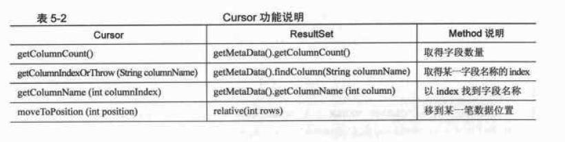
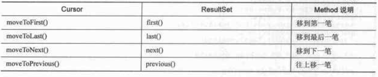

SQLite和Android小项目
SQLite 是一个类似Access的轻量级数据库系统，但是更小、更快、容量更大，并发更高。为什么说 SQLite 最适合做 CMS (内容管理系统)呢？并不是说其他数据库不好， Oracle、MySQL、SQLServer 也都是非常优秀的 DBS，只不过他们设计目标不同，特性不同，所以只有更适用某个应用场景，没有绝对的好坏之分。
我归纳的中小型站点的CMS的特点如下：
1、数据量不超过10万
2、日页面访问量不超过10万
3、 一部分网站全部生成静态页面，一部分网站实时查询数据库动态访问
4、 站长不懂技术，不懂得复杂的数据库维护，只会用 FTP 管理网站
5 、个人站点基本上是一个人管理，一般情况下只有一个人在访问后台，没有并发
6、 对数据库来说是读多写少，只有在站长访问后台的时候才会写入
7、 多运行于虚拟主机，大部分PHP主机均同时支持MySQL，小部分PHP主机需要单独购买MySQL，PHP+MySQL的主机价格较PHP主机价格高。 (以万网为例：最便宜的PHP空间780元，最便宜的PHP+MySQL的PHP空间1150元)
8、 多数中小站点的HTTP服务与MySQL部署在同一服务器上
SQLite 的优点在中小网站CMS应用场景下表现突出：
1、与MySQL相比，它更彻底的免费，并且没有任何使用上的限制
2、非常小巧，PHP5以上版本中无需任何配置即可支持SQLite
3、无需单独购买数据库服务，无服务器进程，配置成本为零
4、整个数据库存储在一个单个的文件中，数据导入导出备份恢复都是复制文件，维护难度为零
5、读速度快，在数据量不是很大的情况下速度较快，更重要的是：省掉了一次数据库远程链接没有复杂的权限验证，打开就能操作
SQLite的缺点在中小网站 CMS 应用场景下被规避：
1、并发低 动态访问时当访问量不超过10万PV的时候，SQLite 超过 Access 的并发能力已经绰绰有余；生成静态页后更无需考虑数据库的并发问题
2、在大数据量的情况下表现较差 但是中小站点一般情况下数据量不超过10万，而SQlite 在 100 万数据量之下表现还不错，因为省掉了对数据库服务器的远程连接甚至会更快
3、写入较慢 默认配置下的 SQlite 的写入速度比MySQL慢了很多，但是 CMS 应用场景的写入操作较少。在插入新文章的时候基本感受不到慢。集中的写数据库操作只有在安装的时候会出现，不过只出现一次，可以忽略
4、为已有的表加索引较慢 但是在中小站点CMS中不会有这样的需求，可以忽略
5、无法将 MySQL 部署到与前端机不同的服务器上，但是中小站点也没有分开部署的需求
综上所述：在中小站点 CMS 的应用场景下 SQLite 能最大限度的降低建站成本，降低维护难度，又很好得规避了自身的缺点。所以我认为未来支持 SQLite 的 CMS 系统一定会大行其道。
Android 小项目之--SQLite 使用法门
每个应用程序都要使用数据，Android应用程序也不例外，Android使用开源的、与操作系统无关的SQL数据库 --大名鼎鼎的SQLite.SQLite是一款轻量级数据库，它的设计目的是嵌入式，而且它占用的资源非常少，在嵌入式设备中，可能只需要几百KB，这也是 Android 系统采用 SQLite 数据库的原因之一吧。
简介
轻量级
使用 SQLite 只需要带一个动态库，就可以享受它的全部功能，而且那个动态库的尺寸想当小。
独立性
SQLite 数据库的核心引擎不需要依赖第三方软件，也不需要所谓的“安装”。
隔离性
SQLite 数据库中所有的信息(比如表、视图、触发器等)都包含在一个文件夹内，方便管理和维护。
跨平台
SQLite 目前支持大部分操作系统，不至电脑操作系统更在众多的手机系统也是能够运行，比如：Android。
多语言接口
SQLite 数据库支持多语言编程接口。
安全性
SQLite 数据库通过数据库级上的独占性和共享锁来实现独立事务处理。这意味着多个进程可以在同一时间从同一数据库读取数据，但只能有一个可以写入数据。
SQLite使用介绍
首先先来看一下本篇例子继承 SQLiteOpenHelper 类实现的 dbHelper 类。
import android.content.ContentValues;
import android.content.Context;
import android.database.Cursor;
import android.database.sqlite.SQLiteDatabase;
import android.database.sqlite.SQLiteOpenHelper;
import android.database.sqlite.SQLiteDatabase.CursorFactory;
public class DBHelper extends SQLiteOpenHelper {
private final static String DATABASE_NAME = "sec_db";
private final static int DATABASE_VERSION = 1;
private final static String TABLE_NAME = "sec_pwd";
public final static String FIELD_ID = "_id";
public final static String FIELD_TITLE = "sec_Title";
public DBHelper(Context context) {
super(context, DATABASE_NAME, null, DATABASE_VERSION);
}
@Override
public void onCreate(SQLiteDatabase db) {
String sql = "Create table " + TABLE_NAME + "(" + FIELD_ID
+ " integer primary key autoincrement," + FIELD_TITLE
+ " text );";
db.execSQL(sql);
}
@Override
public void onUpgrade(SQLiteDatabase db, int oldVersion, int newVersion) {
String sql = " DROP TABLE IF EXISTS " + TABLE_NAME;
db.execSQL(sql);
onCreate(db);
}
public Cursor select() {
SQLiteDatabase db = this.getReadableDatabase();
Cursor cursor = db.query(TABLE_NAME, null, null, null, null, null,
" _id desc");
return cursor;
}
public long insert(String Title) {
SQLiteDatabase db = this.getWritableDatabase();
ContentValues cv = new ContentValues();
cv.put(FIELD_TITLE, Title);
long row = db.insert(TABLE_NAME, null, cv);
return row;
}
public void delete(int id) {
SQLiteDatabase db = this.getWritableDatabase();
String where = FIELD_ID + "=？";
String[] whereValue = { Integer.toString(id) };
db.delete(TABLE_NAME, where, whereValue);
}
public void update(int id, String Title) {
SQLiteDatabase db = this.getWritableDatabase();
String where = FIELD_ID + "=？";
String[] whereValue = { Integer.toString(id) };
ContentValues cv = new ContentValues();
cv.put(FIELD_TITLE, Title);
db.update(TABLE_NAME, cv, where, whereValue);
}
}
创建和打开数据库
上篇通过构造函数来创建数据库，看一下构造函数的方法
android.database.sqlite.SQLiteOpenHelper.SQLiteOpenHelper(Context context， String name， CursorFactory factory， int version)
public SQLiteOpenHelper (Context context， String name， SQLiteDatabase.CursorFactory factory， int version)
Since： API Level 1
Create a helper object to create， open， and/or manage a database. The database is not actually created or opened until one of getWritableDatabase() or getReadableDatabase() is called.
Parameters
context to use to open or create the database
name of the database file， or null for an in-memory database
factory to use for creating cursor objects， or null for the default
version number of the database (starting at 1)； if the database is older， onUpgrade(SQLiteDatabase， int， int) will be used to upgrade the database
Public Methods
大体可以理成如下：如果进入此函数，不存在此数据库则创建，如果存在此数据库则打开连接，只要进入此方法就可以用打开的连接获得getWritableDatabase()或getReadableDatabase()这两个方法。
创建表--》Create Table
一个数据库中可以包含多个表，每一条数据都存在指定的表中，要创建可以通过 execSQL 方法来执行一条 SQL 语句。上面的方法为
代码
public void onCreate(SQLiteDatabase db) { String sql = "Create table " + TABLE_NAME + "(" + FIELD_ID
+ " integer primary key autoincrement，" + FIELD_TITLE
+ " text );";
db.execSQL(sql);
}
上面代码创建了表名为“sec_pwd” 的数据表，表内存在一个 integer 类型的主键和一个 text 类型的字段，并执行创建该表。
添加数据--》Insert
上面的代码封装了一个使用SQLite 的 insert 方法，向表中添加数据，但是insert 方法要求把数据都打包到 ContentValues 中，ContentValue其实可就是一个 HashTable，Key值是字段名称，Value 值是字段的值.通过 ContentValues 的put 方法就可以把数据库放到 ContentValue 对象中，然后插入到表中去。代码为：
public long insert(String Title) { SQLiteDatabase db = this.getWritableDatabase();
ContentValues cv = new ContentValues();
cv.put(FIELD_TITLE, Title);
long row = db.insert(TABLE_NAME, null, cv);
return row;
}
删除数据--》Delete
依此类推，添加数据用Insert，那么删除数据为Delete
public class Snippet { public void delete(int id) {
SQLiteDatabase db = this.getWritableDatabase();
String where = FIELD_ID + "=？";
String[] whereValue = { Integer.toString(id) };
db.delete(TABLE_NAME, where, whereValue);
}
public void update(int id, String Title) {
SQLiteDatabase db = this.getWritableDatabase();
String where = FIELD_ID + "=？";
String[] whereValue = { Integer.toString(id) };
ContentValues cv = new ContentValues();
cv.put(FIELD_TITLE, Title);
db.update(TABLE_NAME, cv, where, whereValue);
}
}
可根据自己需要修改字段自行加参数。
查询数据--》Query
public Cursor select()
{
SQLiteDatabase db = this.getReadableDatabase();
Cursor cursor = db.query(TABLE_NAME, null, null, null, null, null, " _id desc");
return cursor；
}
在Android中查询数据是通过Cursor类来实现的，当我们使用SQLiteDatabase.query()方法时，会得到一个Cursor对象，Cursor指向的就是每一条数据.它提供了很多有关查询的方法，具体截图如下：


现在dbHelper己经封装完毕，接下来正式进入到我们实际例子中要操作的功能吧，项目运行效果图：

这里用到了Menu做功能按钮，实例代码如下：
import android.app.Activity;import android.database.Cursor;
import android.database.sqlite.SQLiteCursor;
import android.os.Bundle;
import android.view.Menu;
import android.view.MenuItem;
import android.view.View;
import android.widget.AdapterView;
import android.widget.EditText;
import android.widget.ListAdapter;
import android.widget.ListView;
import android.widget.SimpleCursorAdapter;
import android.widget.AdapterView.OnItemClickListener;
import android.widget.AdapterView.OnItemSelectedListener;
public class testDbActivity extends Activity {
private dbHelper db;
private Cursor myCursor;
private ListView myListView;
private EditText myEditText;
private int _id;
protected final static int MENU_ADD = Menu.FIRST;
protected final static int MENU_EDIT = Menu.FIRST + 1;
protected final static int MENU_DELETE = Menu.FIRST + 2;
@Override
public boolean onCreateOptionsMenu(Menu menu) {
super.onCreateOptionsMenu(menu);
menu.add(Menu.NONE, MENU_ADD, 0, R.string.ADD);
menu.add(Menu.NONE, MENU_EDIT, 0, R.string.EDIT);
menu.add(Menu.NONE, MENU_DELETE, 0, R.string.DELETE);
return true;
}
@Override
public boolean onOptionsItemSelected(MenuItem item) {
super.onOptionsItemSelected(item);
switch (item.getItemId()) {
case MENU_ADD:
operation("add");
break;
case MENU_EDIT:
operation("edit");
break;
case MENU_DELETE:
operation("delete");
break;
default:
break;
}
return true;
}
/** Called when the activity is first created. */
@Override
public void onCreate(Bundle savedInstanceState) {
super.onCreate(savedInstanceState);
setContentView(R.layout.main);
myEditText = (EditText) findViewById(R.id.EditText1);
myListView = (ListView) findViewById(R.id.ListView1);
db = new dbHelper(testDbActivity.this);
myCursor = db.select();
SimpleCursorAdapter adpater = new SimpleCursorAdapter(this, R.layout.test, myCursor,
new String[] { dbHelper.FIELD_TITLE },
new int[] { R.id.topTextView });
myListView.setAdapter(adpater);
myListView.setOnItemClickListener(new OnItemClickListener() {
@Override
public void onItemClick(AdapterView<?> arg0, View arg1, int arg2,
long arg3) {
myCursor.moveToPosition(arg2);
_id = myCursor.getInt(0);
myEditText.setText(myCursor.getString(1));
}
});
myListView.setOnItemSelectedListener(new OnItemSelectedListener() {
@Override
public void onItemSelected(AdapterView<?> arg0, View arg1,
int arg2, long arg3) {
SQLiteCursor sc = (SQLiteCursor) arg0.getSelectedItem();
_id = sc.getInt(0);
myEditText.setText(sc.getString(1));
}
@Override
public void onNothingSelected(AdapterView<?> arg0) {
}
});
}
private void operation(String cmd)
{
if (myEditText.getText().toString().equals(""))
return;
if (cmd == "add")
db.insert(myEditText.getText().toString());
if (cmd == "edit")
db.update(_id, myEditText.getText().toString());
if (cmd == "delete")
db.delete(_id);
myCursor.requery();
myListView.invalidateViews();
myEditText.setText("");
_id = 0;
}
}
至此，功能己经基本完成。